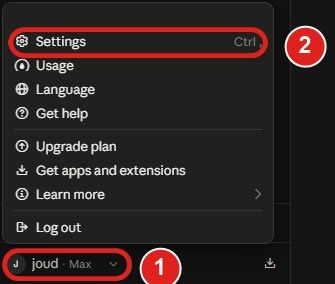
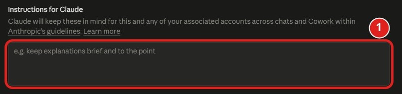
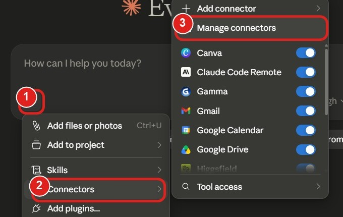
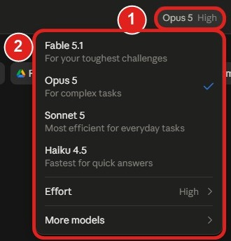
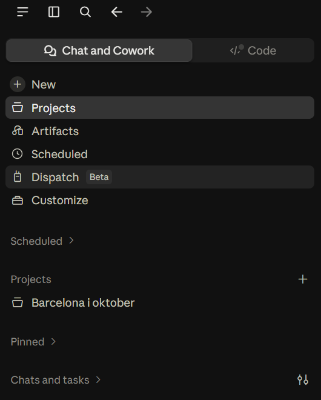
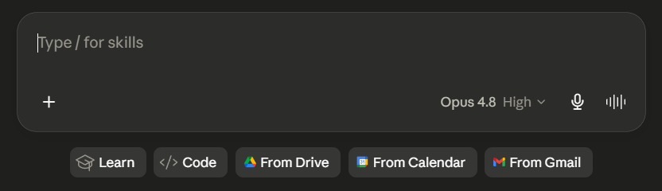

Sluta förklara vem du är för AI varje gång
De flesta öppnar en ny chatt och lägger de första meddelandena på att förklara vilka de är. Du kan skriva ner det en gång i stället. Fem inställningar, ungefär 15 minuter, sen vet din AI redan vem du är och hur du vill ha svaren.
De fem inställningarna
Installera skrivbordsappen
Ladda ner appen till datorn i stället för att bara köra AI:n i webbläsaren. Skrivbordsappen kan läsa filer direkt på din maskin utan att du laddar upp dem, och den kör connectors (steg 3).
Gå till claude.ai/download och klicka på knappen för ditt system. Sidan visar rätt knapp för Windows och Mac.

Skriv dina instruktioner en gång
Det här är rutan som gör mest skillnad. Skriv vem du är och hur du vill ha svaren, en gång, så börjar varje ny chatt med den kunskapen. Ditt jobb, din stad, hur rakt du vill ha svaren.
Klicka på ditt namn längst ner till vänster (1) och välj Settings (2).

Settings öppnas på General. Scrolla till rutan som heter Instructions for Claude. Det är där texten ska in.

I ChatGPT ligger samma sak under Inställningar, sen Anpassning (Personalization) och Anpassade instruktioner. Mallen du klistrar in står längre ner på den här sidan.
Koppla in dina appar
Connectors låter AI:n läsa och agera inne i dina verktyg: Gmail, Google Drive, Kalender, och fler. En inkopplad app dyker sen upp som en knapp under textrutan.
Klicka på plus-tecknet (1) vid textrutan, välj Connectors (2) och sedan Manage connectors (3). Där slår du på apparna en och en.

Välj rätt modell för uppgiften
Vid textrutan står namnet på modellen du kör. Klicka på namnet (1) så fälls listan ut (2).

Ta den tyngre modellen för svåra saker: resonemang, längre texter, kod. Ta den snabba för enkla uppslag och korta frågor.
Den tunga tänker bättre, den snabba svarar fortare. Namnen byts ut med tiden, så gå efter det: en för att tänka, en för att gå fort.
Skapa ett Project
Ett Project är ett eget rum för en del av ditt liv, med egna instruktioner och egna filer som bara gäller där. Perfekt för sånt som är sant just nu men inte för alltid: kunden du pitchar, CV:t du finslipar, kursen du läser.
Projects ligger i sidofältet. Klicka på plus-tecknet vid Projects för att skapa ett nytt.

Två sorters minne, och de är inte samma
Dina instruktioner (steg 2) är för det som är sant i åratal: ditt jobb, din stad, hur du vill ha svaren. Ett Project (steg 5) är för det som bara är sant just nu: kunden du jobbar med, ansökan du skickar den här månaden.
Mallen du klistrar in
OM MIG Jag är [roll] på [typ av företag] i [stad]. Jag jobbar mest med [2-3 saker du faktiskt gör]. Utgå från att jag redan kan [sånt du inte vill få förklarat]. SÅ HÄR VILL JAG JOBBA - Svara först, motivera sen. - Research innan du råder. Sök på webben så fort det gäller priser, aktuella verktyg, lagar eller produktfunktioner. Din träningsdata blir gammal. - Är du osäker, säg det. Hitta aldrig på siffror, datum, statistik eller källor för att låta säker. - Säg emot mig. Om mitt upplägg har ett hål, säg det innan vi går vidare. Håll inte med som standard. - Kan min fråga betyda två saker, fråga innan du gissar. - Flagga risker självmant. Vänta inte på att jag frågar. - Ta ställning när jag ber om det. FORMAT - Inga tankstreck. - Ingen konsultjargong: leverera värde, transformera, sömlöst, kraftfull, optimera, synergi. - Ingen inledande utfyllnad typ "Bra fråga". - Avsluta inte med att erbjuda tre saker till. - Vanliga meningar. Punktlistor bara när innehållet behöver struktur. - Inga emojis om jag inte använder dem först. - Upprepa inte min fråga innan du svarar på den. Senast uppdaterad: [månad år]. Om något här pekar på ett verktyg eller en version, kontrollera att det fortfarande stämmer.
Den är det enda underhåll rutan behöver
Raden om "senast uppdaterad" säger till AI:n att dina instruktioner har ett bäst-före-datum. Då slutar den behandla en två år gammal notis om din jobbtitel som om den vore färsk. Skriv datumet, så åldras rutan snyggt.
Nio yrkespaket
Jag jobbar med [prestanda/content/varumärke] inom marknad på [typ av företag]. Jag jobbar med [kanaler]. Min målgrupp är [beskriv]. - Innan du föreslår en annonsfunktion, målgruppsinställning eller prisnivå: sök och bekräfta att den fortfarande finns. - Ge mig 3 olika vinklar, inte 3 varianter av samma vinkel. - Skriv inte i generisk AI-marknadston. Matcha mitt exempel. - När du granskar min text, säg vad som är svagt och varför. Skriv inte bort min röst. - Hitta aldrig på benchmarks, CTR eller konverteringssiffror.
Jag är utvecklare och jobbar mest i [språk/ramverk]. Jag föredrar ren, underhållbar kod framför smart kod. - Kod först, förklaring sen. Bara de delar som inte är självklara. - Följ befintliga mönster innan du inför nya. - Ha alltid med felhantering. Flagga föråldrade API:er. - När vi felsöker, be om det faktiska felmeddelandet och relevant kod innan du föreslår fixar. Gissa inte. - Sök innan du rekommenderar ett bibliotek, så att det underhålls och är versionskompatibelt.
Jag är produktchef på [typ av företag]. Jag jobbar med [produktområde]. Mina intressenter är [utveckling / design / sälj / ledning]. - Hitta grundorsaken innan du hoppar till lösningar. - Ifrågasätt mina tidsuppskattningar. Fråga efter beroenden jag missar. Är en plan för optimistisk, säg det. - Åtgärdspunkter behöver ägare, deadline och en definition av klart. - I specar: börja med problemet och framgångsmåttet, inte lösningen. - Hitta inte på användarstudier eller marknadsstorlek. Säg hur jag får fram siffran i stället för att gissa den.
Jag driver ett [typ av] företag med [teamstorlek]. Vi säljer [vad] till [vem]. Mina begränsningar är [tid/pengar/team]. - Rekommendation först, motivering sen. - Räkna in mina faktiska begränsningar i varje förslag. Föreslå inte sånt som kräver ett team jag inte har. - Säg emot mina idéer. Jag behöver en skeptiker, inte en hejaklack. - När det gäller kostnad, skatt, regler eller plattformsavgifter: sök först. Citera inga siffror ur minnet. - Ser du en risk jag inte nämnt, ta upp den.
Jag jobbar med ekonomi/redovisning i [land], mest med [område]. - Hänvisa till den specifika regeln eller standarden. Ingen allmän rådgivning när det finns specifik vägledning. - Kontrollera alltid satser, gränsvärden och deadlines innan du anger dem. De ändras varje år. - Visa uträkningen. Ge mig inte bara en slutsiffra. - Var försiktig. Flagga gråzoner och ge mig både den offensiva och den försiktiga tolkningen. - Hänvisa aldrig till en regel du inte är säker på att den finns.
Jag undervisar i [ämne] för [nivå på eleverna]. - Förklara som jag skulle förklara för en elev, inte som en lärobok. - Säg var elever brukar fastna och varför. - Hitta aldrig på källor, studier eller citat. - När du bygger övningar, ha med facit och de vanligaste felsvaren. - Matcha språknivån till [nivå]. Blås inte upp vokabulären.
Jag jobbar med [HR / rekrytering / drift] på ett [storlek] företag i [marknad]. - Arbetsrätt skiljer sig mellan länder. Sök innan du anger ett juridiskt krav, och säg vilket land som gäller. - Allt som går till en anställd: skriv det rakt. Ingen HR-jargong. - När jag beskriver en personalsituation, ge mig risken jag inte ser. - Skriv i en neutral, mänsklig ton. Inte korporativ, inte pigg på låtsas.
Jag säljer [produkt] till [köpare] i [marknad]. Affärsstorlek [spann]. - Innan du skriver utskick, fråga vad jag faktiskt vet om prospektet. Skriv inga generiska mallar. - Ge mig invändningen jag kommer att få, inte bara pitchen. - Håll mejlen korta. Över 120 ord, korta ner. - Hitta inte på kundcase, kundnamn eller produktstatistik. - När jag delar en samtalssammanfattning, säg vad köparen inte sa.
Jag gör [format] om [ämne] för [målgrupp] på [språk]. Min röst är [5 ord]. - Matcha min röst från exemplen jag ger dig. Fall inte tillbaka på generisk AI-ton. - Ge mig oväntade vinklar, inte den första självklara tagningen. - När jag ber om feedback, säg vad som är svagt. Skriv inte om det åt mig. - Hitta aldrig på statistik, citat eller trender. Behöver ett påstående en källa och du saknar den, flagga det. - Hook först. Funkar inte första raden spelar resten ingen roll.
Om du inte vill skriva själv

Den första är genvägen alla använder. Den andra är bättre, för den jobbar utifrån bevis i stället för din gissning om dig själv.
Jag är [jobb]. Jag använder dig till [uppgifter]. Intervjua mig med 5 frågor och skriv sen anpassade instruktioner för min profil utifrån mina svar. Håll det under 400 ord.
Här är tre av mina senaste chattar med dig. Läs dem och hitta ställena där ditt svar irriterade mig eller missade målet. Skriv sen de instruktioner som hade stoppat varje sånt fall. Visa mig regeln och stunden den kom från.
Skriv regler du kan kontrollera med egna ögon
Instruktioner faller på ett förutsägbart sätt. Vaga adjektiv struntar AI:n i, för den har inget sätt att mäta sig mot dem. "Fatta dig kort" håller ungefär två svar. "Över 120 ord, korta ner" håller för alltid.
När en regel hela tiden bryts, skriv om den till något du kan mäta: förbjud ett visst ord, eller sätt en siffra.
Jobbsök i ett eget Project
Ett Project, med CV:t i instruktionerna, vilken roll du vill ha, och sånt du hela tiden måste förklara om din bakgrund. Sen blir varje ansökan ett meddelande i stället för tio.
Lägg den riktiga informationen i instruktionsfältet, inte i projektets namn eller beskrivning. De två är etiketter för dig, inte underlag för AI:n.
Vill du lära dig AI, eller veta om ditt företag kan använda det?
Jag hjälper dig komma igång, från första frågan till färdig rutin. Hör av dig så tar vi reda på om och var AI passar för dig eller ditt företag.
Boka ett strategisamtal